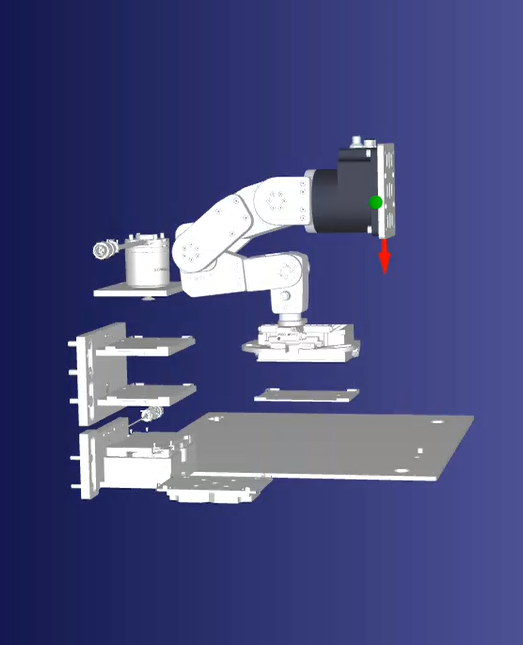
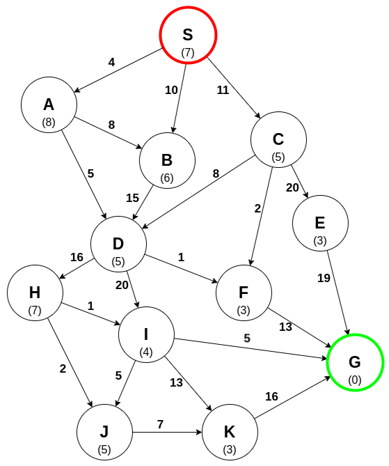
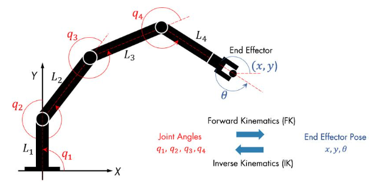

ROBOTICS · MOTION PLANNING · AUTOMATION
Robot Path Planner using A* Search
A Python-based application for planning robot trajectories, validating motion paths, and automating teachpoint and program generation in RoboDK using A* Search.

Overview
The RoboDK Trajectory Planner is a Python-based desktop application developed to automate robotic trajectory planning and program generation within RoboDK.
The application uses existing pick-and-place teachpoints as inputs, generates candidate robot trajectories using graph-based path planning, and incorporates robot reachability and collision validation.
The tool creates new teachpoints, generates robot motion programs, and automatically tests the resulting paths in RoboDK.
Key Features
Graph-Based Path Planning
Graph-based path planning using A* search
Robot Motion Validation
Inverse kinematics and collision validation
Teachpoint Generation
Automatic creation of visible teachpoints
Program Generation
Automated RoboDK program generation and path testing
System Design
User Tasks
- User creates a RoboDK station containing the robot and reference frames.
- User creates target teachpoints (goal poses) for the robot to reach and a start location (starting pose), and names them using an identifier.
Motion Planner Program
- Generates intermediate trajectory points from graph-based A* search.
- Constraints: Robot should hold the object horizontally level without tilting it; robot should approach the object at 45 mm along the Tool Reference Frame Z-axis.
- Robot reachability is validated for each intermediate trajectory point via inverse kinematics. Failed points are discarded.
- Motion programs are created in RoboDK.
- Collision checking is run for motion programs in RoboDK. Any trajectory with a collision is discarded.
- Path shortening is performed by testing motion programs that skip intermediate points and validating them through simulation.
A* Path Planning
A free-space graph is constructed and A* search is used to generate candidate paths.

Free-Space Graph
Represents candidate robot motion routes using connected graph nodes.
A* Search
Generates candidate paths between start and goal locations.
Reachability
Evaluates intermediate trajectory points using inverse kinematics.
Path Shortening
Tests paths that skip intermediate points and validates them in RoboDK.
Graph Based Search Parameters
The following parameters were used for the Graph Based search.
| Parameter | Value |
|---|---|
| Max Reach of Robot (mm) | 300.0 |
| Resolution of graph (mm) | 25.0 |
| Number of neighbor nodes for each node in graph | 6 |
| Max routes in graph | 10 |
| Max path hops | 80 |
| Search state limit in graph | 200000 |
| Max grid points in graph | 100000 |
| Edge Validation mode in graph | "geometric" |
| Timeout for planning for each goal | 180.0 |
Reachability and Collision Validation
RoboDK inverse kinematics and collision-checking capabilities are used to evaluate candidate trajectories against the robot model and simulation environment.

- Inverse Kinematics: Evaluate robot reachability for intermediate trajectory points.
- Collision Validation: Test generated motion programs against the RoboDK simulation environment.
- Path Refinement: Test shortened trajectories by skipping intermediate points and validating the resulting motion.
Demo
Demonstration of the RoboDK Trajectory Planner, including trajectory generation, teachpoint creation, motion program generation, and automated path testing.
Results
This program produced a huge time save (couple minutes vs days of manual path planning) and it automated the validation process.